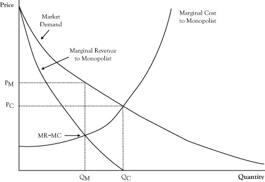

Often, the main deterrent to a highly competitive market is market power possessed by sellers. In this section, we will consider the strongest form of seller market power, called a monopolyThe strongest form of seller market power; a market structure in which there is only one seller with market power.. In a monopoly there is only one seller, called a monopolistThe one seller that possesses market power..
Recall that in perfect competition, each firm sees the demand curve it faces as a flat line, so it presumes it can sell as much as it wants, up to its production limit, at the prevailing market price. Even though the overall market demand curve decreases with increased sales volume, the single firm in perfect competition has a different perception because it is a small participant in the market and takes prices as given. In the case of flat demand curves, price and marginal revenue are the same, and since a profit-maximizing producer decides whether to increase or decrease production volume by comparing its marginal cost to marginal revenue, in this case the producer in perfect competition will sell more (if it has the capability) up the point where marginal cost equals price.
In a monopoly, the demand curve seen by the single selling firm is the entire market demand curve. If the market demand curve is downward sloping, the monopolist knows that marginal revenue will not equal price. As we discussed in Chapter 2 "Key Measures and Relationships", when the demand curve is downward sloping, the marginal revenue corresponding to any quantity and price on the demand curve is less than the price (see Figure 7.1 "Graph Showing the Optimal Quantity and Price for a Monopolist Relative to the Free Market Equilibrium Price and Quantity"). Because the condition for optimal seller profit is where marginal revenue equals marginal cost, the monopolist will elect to operate at a quantity where those two quantities are in balance, which will be at volume marked QM in Figure 7.1 "Graph Showing the Optimal Quantity and Price for a Monopolist Relative to the Free Market Equilibrium Price and Quantity".
Since the monopolist has complete control on sales, it will only sell at the quantity where marginal revenue equals marginal cost but will sell at the higher price associated with that quantity on the demand curve, PM, rather than the marginal cost at a quantity of QM.
Figure 7.1 Graph Showing the Optimal Quantity and Price for a Monopolist Relative to the Free Market Equilibrium Price and Quantity
If the marginal cost curve for the monopolist were instead the combined marginal cost curves of small firms in perfect competition, the marginal cost curve would correspond to the market supply curve. The perfect competition market equilibrium would occur at a volume QC, with a price PC. The monopolist could afford to function at this same volume and price and may even earn some economic profit. However, at this volume, marginal cost is greater than marginal revenue, indicating greater profit by operating at a lower volume at a higher price. The highest profit will result from selling QM units at a price of PM. Unfortunately, consumers do worse at the monopolist’s optimal operation as they pay a higher price and purchase fewer units. And as we noted in the previous chapter, the loss in consumer surplus will exceed the profit gain to the monopolist. This is the main reason monopolies are discouraged, if not outlawed, by governments.